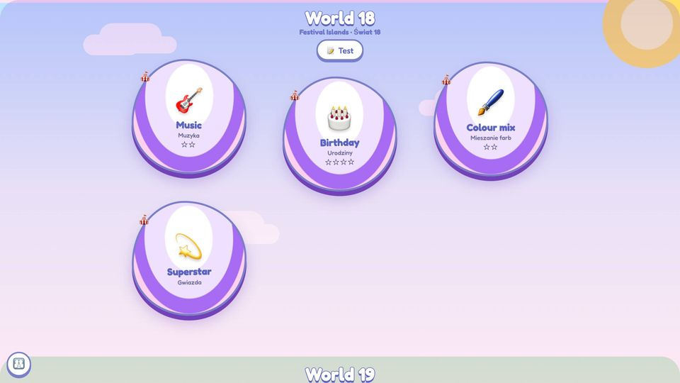
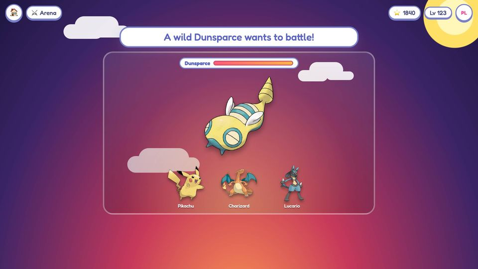
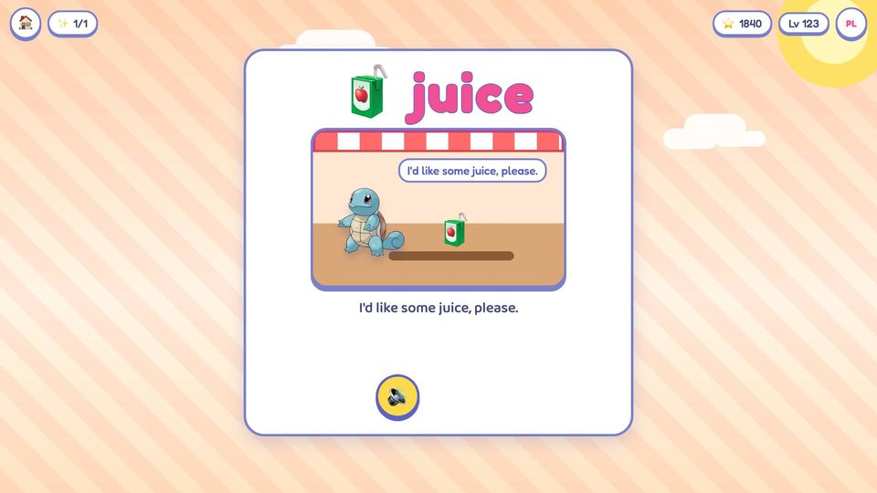
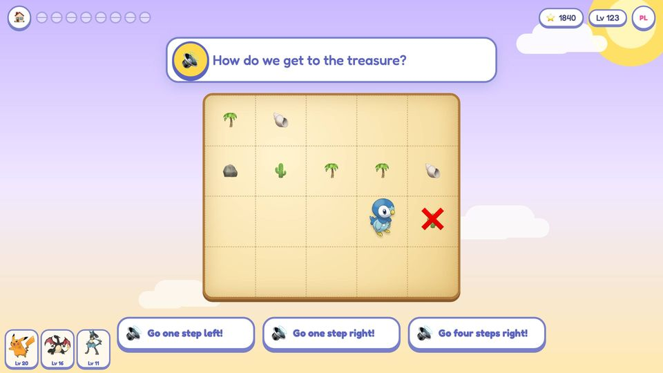
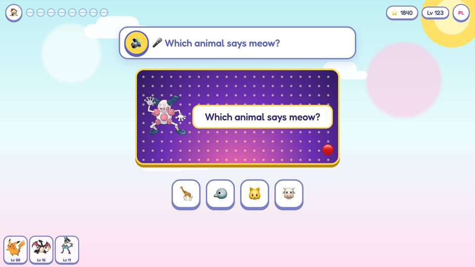
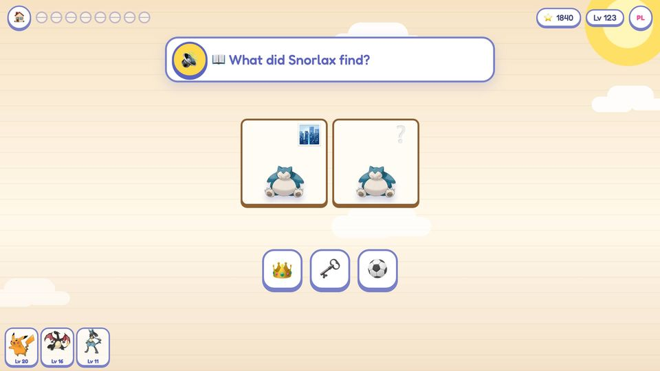
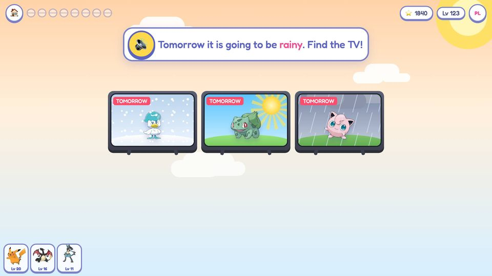
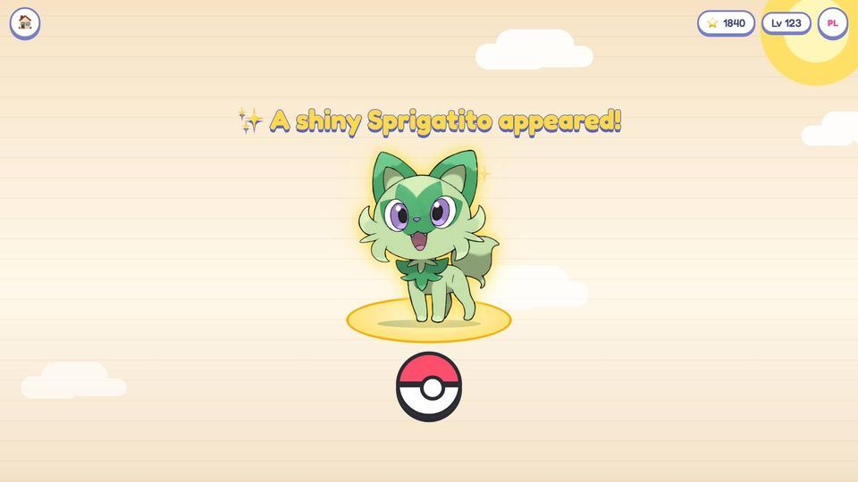
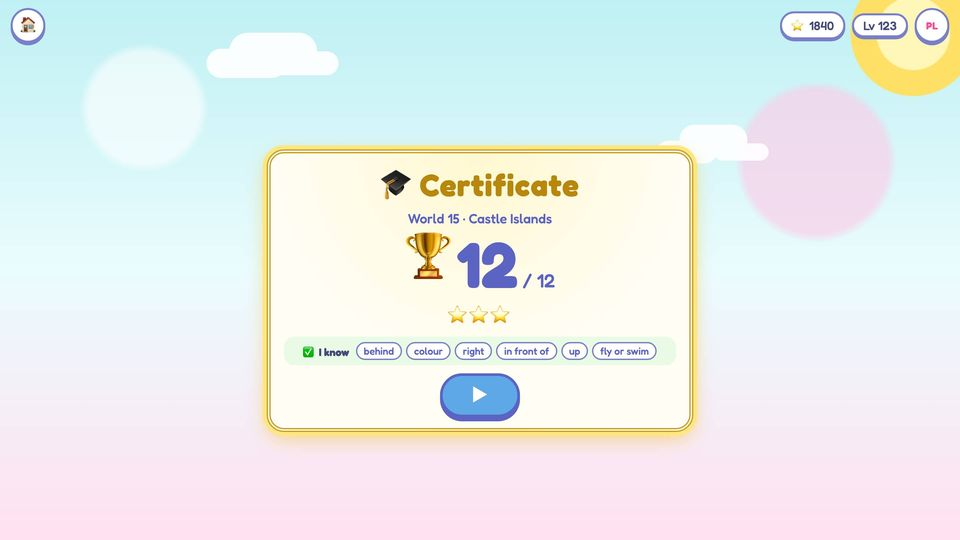

Gra, w której dziecko najpierw słucha, potem mówi i czyta po angielsku. Uczy przez zabawę z ulubionymi stworkami: łapie Pokémony, buduje drużynę, walczy na Arenie i zdobywa odznaki.


Gra stoi na metodach, które dobrze działają u małych dzieci. Polski pojawia się tylko w przycisku pomocy — mówi, co trzeba zrobić, ale nigdy nie tłumaczy słówek.
Każde zadanie zaczyna się od zdania po angielsku, a znaczenie wynika z obrazka. Dziecko nie musi umieć czytać.
Wszystkie zdania nagrała jedna lektorka, 15 500 nagrań. Na każdym urządzeniu dziecko słyszy tę samą, wyraźną wymowę.
„Pikachu, jump!", „Cut the apple!" — dziecko wydaje polecenia, a Pokémon je wykonuje. Słowo łączy się z ruchem.
Słowo wraca po 1, 2, 4 i 7 dniach. Za opanowane uznajemy je dopiero po dobrych odpowiedziach w różne dni.
Słowa, które sprawiają kłopot, wracają w bitwie z bossem. Każda dobra odpowiedź to atak drużyny — powtórka, która wciąga.
Nie ma tracenia żyć ani pośpiechu. Zła odpowiedź też uczy, a po dwóch próbach gra podpowiada.
Od pierwszych słówek do rozmów. Każdy świat kończy się ligą i sprawdzianem ze świadectwem.
Każde zadanie to mała scena: pizzeria, kawiarnia, mapa skarbów, studio teleturnieju.






Widać, co dziecko naprawdę umie — nie tylko ile ma gwiazdek.

Nie. Wszystko jest mówione i pokazane na obrazkach. Czytanie pojawia się stopniowo w dalszych światach (litery, krótkie słowa, a na końcu całe zdania).
Nie. Przycisk PL wyjaśnia po polsku, co trzeba zrobić w zadaniu. Warto za to zachęcać dziecko, żeby powtarzało zdania na głos, kiedy gra mówi „Your turn!".
Nic. Gra jest darmowa, bez reklam, bez zakupów w grze i bez zakładania konta.
W przeglądarce, na tym urządzeniu. Nigdzie go nie wysyłamy. Wyczyszczenie danych przeglądarki albo tryb prywatny usuwa wynik, a na innym urządzeniu dziecko zaczyna od nowa.
Nie. Wersja w internecie nie używa mikrofonu ani kamery i nie zbiera żadnych danych o dziecku. Liczymy tylko anonimowe wejścia na stronę, bez ciasteczek.
Na telefonie, tablecie albo komputerze, w zwykłej przeglądarce. Potrzebny jest dźwięk — najlepiej słuchawki albo głośnik.